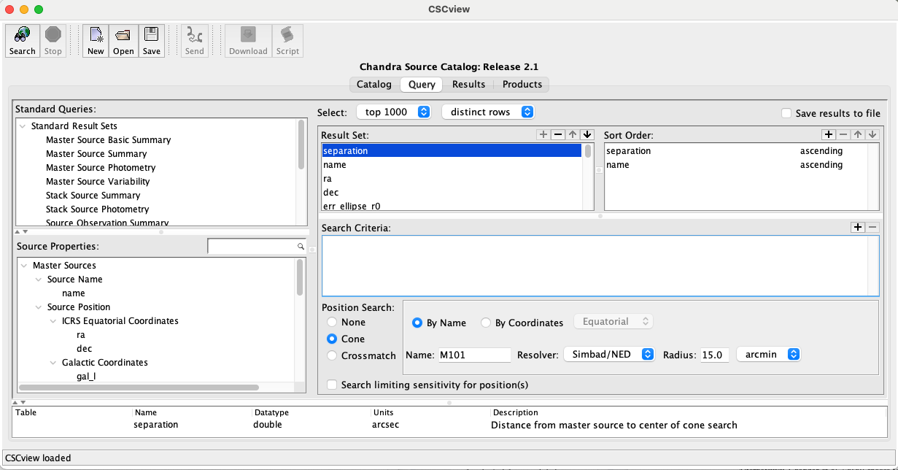

Retrieving X-ray Data from the CSC#
For my work, the most important information that I need from CXO is the coordinates of the X-ray sources (used to locate their optical counterparts on an HST image), their X-ray luminosities (calculated from the CSC-provided flux), their hardness ratios (used to determine whether or not they may be a supernova remnant in a later section), the off-axis angle, and the total X-ray counts (the last two of which are used to calculate the uncertainty radii in Astrometric Corrections). This information can be pulled directly from CSCView.jar.
Open the program by clicking the icon or typing into the command line (where it is saved):
java -jar cscview.jar &
(The optional & allows you to continue using the terminal for other processes while cscview.jar is running)
This will open the program GUI, which will look something like:
Select the most recent data release. Under Source Properties, search for hardness ratio or hard_hs and add it to the Result Set with the + button. Do the same for off-axis angle (theta or theta_mean) and total X-ray counts ([LehmerEufrasioTzanavaris+19] appears to use src_cnts_aper_b, src_cnts_aper_lolim_b, and src_cnts_aper_hilim_b).
All other results can be left as is, or you may remove the properties that you won’t need to save memory. You can save the query for future use by clicking the Save button at the top of the window. By default, it is saved with the suffix .prop.
Note
There may be additional data needed in order to clean up the X-ray source catalog such that only good data are included in your analysis. Since I focused mainly on X-ray sources identified in [LehmerEufrasioTzanavaris+19], which did this step for me, I never had to deal with this. However, it’s something that will need to be kept in mind for future products. See [LehmerEufrasioTzanavaris+19] for more information on data selection from CSC.
To search for the CXO X-ray sources associated with your galaxy of interest, select Cone under Position Search at the bottom of the window and search for the galaxy of interest by name or coordinates. In the example above, I am looking for X-ray sources in M101, which has a linear diameter of roughly 30 arcminutes. I set the search parameters accordingly and hit the Search button at the top left of the window. This automatically brings you from the Query tab to the Results tab, from which you can select all the X-ray sources and save them to a .vot file.
Note
You will need to press the Search button every time you make a change in the Query tab. Otherwise, your search results may not be updated!
To view the .vot file, open TopCat:
java -jar topcat-full.jar
(or whatever equivalent you saved it under). This will open a window that resembles the following:
Fig. 1 Example of the TOPCAT user interface.#
In the GUI above, navigate to the .vot file via the Filestore Browser or System Browser interface. This will pull up the file information under Current Table Properties. The 4th icon at the top of the window (looks like a spreadsheet) will open the Table Browser, which allows you to view the table as a spreadsheet.
Converting from VOTable to Pandas DataFrame#
In the repository for this guide, I’ve included custom code that I use to convert .vot files into Pandas DataFrames in python, a function called NewSources() from the Sources.py script. To use this function, you simply need to open run something like this in an iPython notebook:
# When running python from a notebook, it's good to import a function
# that will allow you to navigate your directories
import os
cd = os.chdir
pwd = os.getcwd
# I saved these functions to a directory called 'pyfiles'. Navigating to that folder first
cd('../pyfiles')
from Sources import NewSources
%run Sources.py # run commands are only needed in an ipynb
cd('../') # Navigating back to the original directory
NewSources("testdata/cscresults_M101.vot") # I saved my .vot to a directory called 'testdata'
### This can also be done in the command line terminal, but without the second line. ###
Reading in table from testdata/cscresults_M101.vot
DONE
| separation | name | ra | dec | livetime | theta_mean | err_ellipse_r0 | err_ellipse_r1 | err_ellipse_ang | significance | ... | hard_hs_hilim | hard_hm | hard_hm_lolim | hard_hm_hilim | hard_ms | hard_ms_lolim | hard_ms_hilim | src_cnts_aper_b | src_cnts_aper_lolim_b | src_cnts_aper_hilim_b | |
|---|---|---|---|---|---|---|---|---|---|---|---|---|---|---|---|---|---|---|---|---|---|
| 0 | 0.835778 | 2CXO J140312.5+542056 | 210.802227 | 54.348952 | 192658.710333 | 2.687974 | 0.296164 | 0.295254 | 89.606978 | 22.302136 | ... | -0.454091 | 0.028732 | -0.100562 | 0.156777 | -0.553404 | -0.61649 | -0.485322 | 170.006026 | 155.698239 | 184.313814 |
| 1 | 0.835778 | 2CXO J140312.5+542056 | 210.802227 | 54.348952 | 142729.493705 | 2.727056 | 0.296164 | 0.295254 | 89.606978 | 22.302136 | ... | -0.454091 | 0.028732 | -0.100562 | 0.156777 | -0.553404 | -0.61649 | -0.485322 | 254.489381 | 233.532285 | 274.136658 |
| 2 | 0.835778 | 2CXO J140312.5+542056 | 210.802227 | 54.348952 | 141298.623812 | 2.783596 | 0.296164 | 0.295254 | 89.606978 | 22.302136 | ... | -0.454091 | 0.028732 | -0.100562 | 0.156777 | -0.553404 | -0.61649 | -0.485322 | 442.576953 | 419.112035 | 464.477543 |
| 3 | 0.835778 | 2CXO J140312.5+542056 | 210.802227 | 54.348952 | 132129.439441 | 2.690653 | 0.296164 | 0.295254 | 89.606978 | 22.302136 | ... | -0.454091 | 0.028732 | -0.100562 | 0.156777 | -0.553404 | -0.61649 | -0.485322 | 131.798703 | 118.539780 | 144.321019 |
| 4 | 0.835778 | 2CXO J140312.5+542056 | 210.802227 | 54.348952 | 130186.649966 | 2.749161 | 0.296164 | 0.295254 | 89.606978 | 22.302136 | ... | -0.454091 | 0.028732 | -0.100562 | 0.156777 | -0.553404 | -0.61649 | -0.485322 | 649.590529 | 616.129127 | 683.051932 |
| ... | ... | ... | ... | ... | ... | ... | ... | ... | ... | ... | ... | ... | ... | ... | ... | ... | ... | ... | ... | ... | ... |
| 3487 | 892.520732 | 2CXO J140447.2+542633 | 211.196627 | 54.442543 | 120993.038017 | NaN | 1.612100 | 0.795238 | 86.007749 | 2.650000 | ... | NaN | NaN | NaN | NaN | NaN | NaN | NaN | 0.000000 | 0.000000 | 59.364933 |
| 3488 | 892.520732 | 2CXO J140447.2+542633 | 211.196627 | 54.442543 | 88598.047743 | NaN | 1.612100 | 0.795238 | 86.007749 | 2.650000 | ... | NaN | NaN | NaN | NaN | NaN | NaN | NaN | 0.000000 | 0.000000 | 14.952548 |
| 3489 | 892.520732 | 2CXO J140447.2+542633 | 211.196627 | 54.442543 | 81021.851289 | 13.486809 | 1.612100 | 0.795238 | 86.007749 | 2.650000 | ... | NaN | NaN | NaN | NaN | NaN | NaN | NaN | 53.481053 | 29.414579 | 77.547526 |
| 3490 | 892.520732 | 2CXO J140447.2+542633 | 211.196627 | 54.442543 | 52087.100775 | NaN | 1.612100 | 0.795238 | 86.007749 | 2.650000 | ... | NaN | NaN | NaN | NaN | NaN | NaN | NaN | 0.000000 | 0.000000 | 34.780341 |
| 3491 | 892.520732 | 2CXO J140447.2+542633 | 211.196627 | 54.442543 | 14276.493764 | 3.416463 | 1.612100 | 0.795238 | 86.007749 | 2.650000 | ... | NaN | NaN | NaN | NaN | NaN | NaN | NaN | 7.591890 | 4.313574 | 10.870206 |
3492 rows × 28 columns
This will read in the table exactly as written. Keep in mind, the code will need to point towards where Sources.py and your .vot file(s) are saved. If you want to rename the headers or save the Dataframe to a file, you can do so using:
NewSources("testdata/cscresults_M101.vot", rename=True, \
outfile="testdata/cscresults_M101.frame")
{kind=link}
The code above will prompt you to rename each of the headers within the .vot Table, then save the DataFrame as a comma-separated value that is easily read in by pd.read_csv() or, better yet, my custom function Sources.LoadSources(). The latter is a little slower, but it will automatically remove the index column of the CSV file and convert applicable values from strings into actual numbers as the DataFrame is being built. This is usually very helpful during the analysis stage, so I recommend using LoadSources() as long as it’s working properly.
You should also save these sources as a region file that can be loaded into DS9 or CARTA to overlay onto an HST FITS file. This can be done fairly simply with WriteScript.WriteReg().